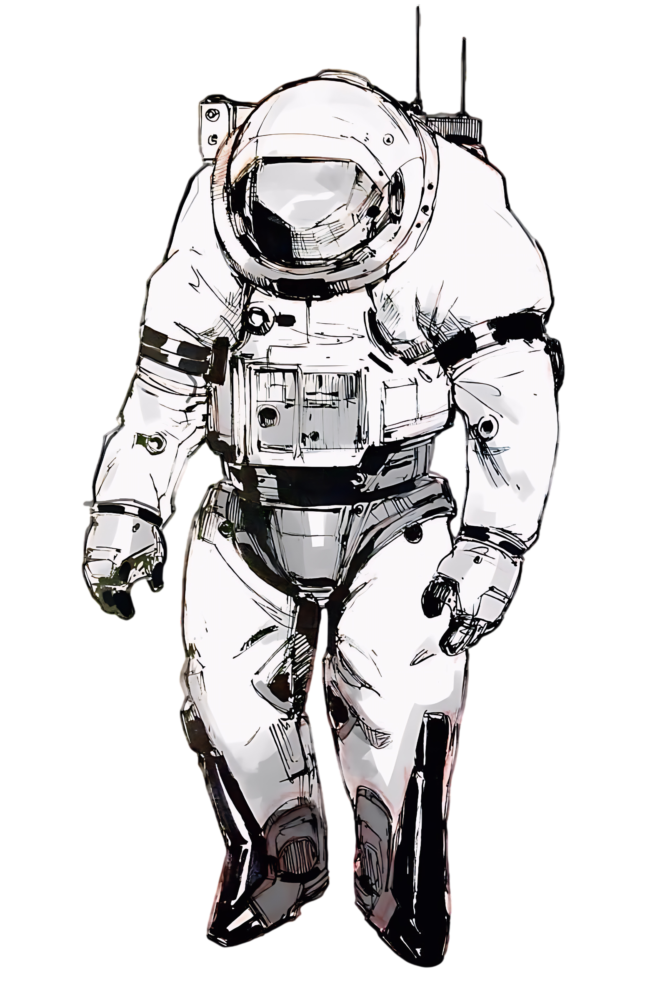

Экипировка и безопасность
Хроно-костюм

Костюм Mk-IV рассчитан на любой климат от ледникового периода до перегретого Нью-Йорка 2300-х. В комплект входят переводчик, терморегуляция, камуфляжный режим и маячок возврата — он же карманный телепортатор.
Правила безопасности
Внимание! Если вы встретили собственного предка — не здоровайтесь, не представляйтесь и не вступайте в разговор. Нажмите кнопку возврата и дождитесь эвакуации.
- Двигайтесь строго по маршруту. Сходить с тропы разрешено только гиду.
- Ничего не забирайте из прошлого: ни монету, ни цветок, ни камень. Любой предмет, вынесенный из эпохи, меняет её и вашу.
- Не рассказывайте людям из прошлого о будущем: ни про изобретения, ни про биржевые курсы, ни про исход битв.
- Не оставляйте следов: мусор, обёртки и забытые гаджеты тоже считаются следами.
- Не трогайте животных и насекомых, особенно бабочек.
- Любое сомнение — повод нажать на кнопку возврата. Мы вернём вас в тот же миг.
Бюро квантового надзора
Бюро квантового надзора
Режим работы: круглосуточно, во всех временных поясах
Почта: office@quantum-bureau.example
Телефон: +7 (000) 125-90-60
Адрес: Терминал №1, зал отправления, Самара, 2026